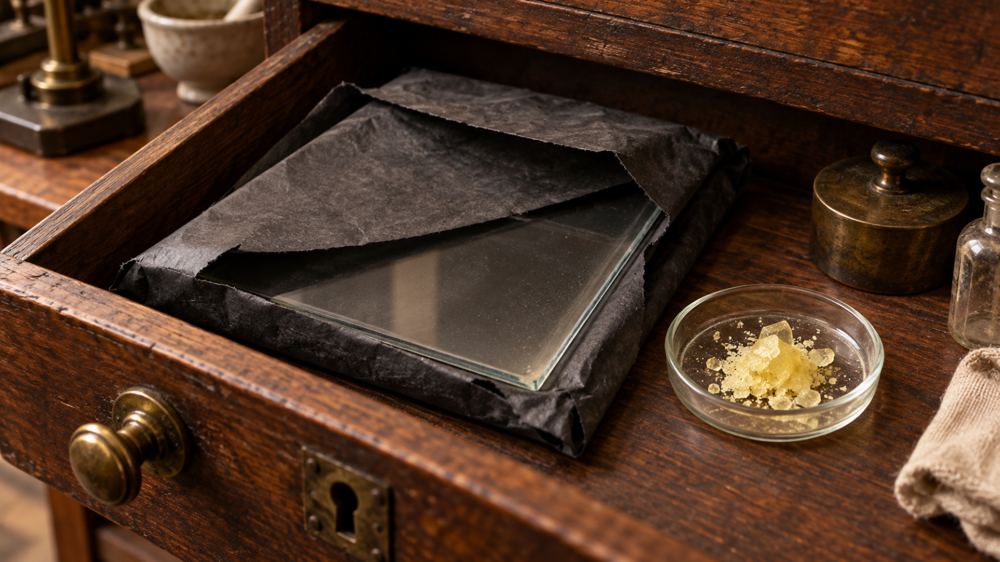
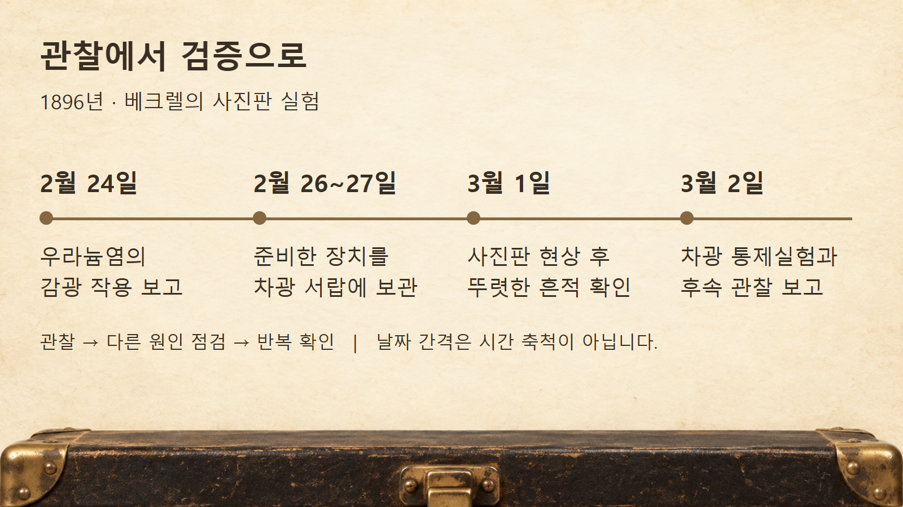
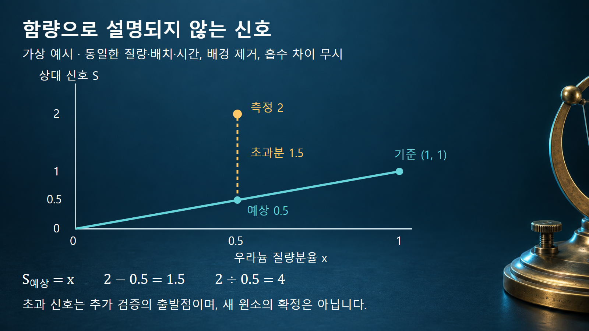

방사성붕괴와 시간 · 041
방사능의 발견
빛 없이도 사진판을 감광시킨 우라늄의 신호

방사능의 발견은 어두운 서랍에서 얻은 뜻밖의 흔적을 통제실험·정량 측정·화학적 분리로 검증한 과정입니다. 관찰과 해석을 구분하면 이 역사가 오늘날의 계측 판단과도 연결됩니다.
사진판 감광과 원자핵 모형의 구별
1896년 앙리 베크렐이 확인한 것은 우라늄염이 가려진 사진판에 작용한다는 현상이었습니다. 오늘날에는 방사능을 불안정한 원자핵이 자발적으로 변화하는 성질과 연결해 설명하지만, 당시 연구자가 처음부터 원자핵과 붕괴 과정을 알고 있었던 것은 아닙니다. 사진판에 남은 검은 흔적은 물질에서 나온 방사선이 감광 물질에 작용한 결과이며, 핵변환 자체를 촬영한 영상은 아닙니다.
발견의 의미는 햇빛을 받아 빛을 내는 물질을 조사하던 중, 가시광선의 발광과 다른 작용을 분리해 냈다는 데 있습니다. 따라서 ‘우연히 서랍을 열어 원자핵을 발견했습니다’라는 설명은 관찰 대상과 연구 단계를 모두 지나치게 줄입니다. 관찰한 신호, 배제한 원인, 아직 남은 가설을 따로 읽어야 합니다.
실제 예시 1: 1896년 2월의 실험과 3월의 확인
2월 24일 프랑스 과학아카데미에 보고한 실험에서는 두꺼운 검은 종이로 사진판을 싸서 햇빛만으로 감광되지 않게 하고, 그 바깥에 우라늄염을 두었습니다. 현상한 판에는 염의 형상이 나타났고, 중간에 둔 금속 물체의 윤곽도 남았습니다. 염과 종이 사이에 얇은 유리를 넣어도 효과가 나타난 점은 단순히 물질에서 나온 증기가 사진판에 화학적으로 작용했다는 설명을 점검하는 통제였습니다.
2월 26~27일에 준비한 장치는 날씨 때문에 우라늄염을 놓은 상태로 어두운 서랍에 보관되었습니다. 베크렐은 3월 1일 사진판을 현상했을 때 예상보다 뚜렷한 흔적을 확인했습니다. 이어 빛을 차단한 조건으로 실험을 다시 구성했고, 3월 2일 보고에서 그 결과를 설명했습니다. 어둠 속에서 작용이 계속된다는 관찰은 후속 통제실험으로 이어졌습니다.

통제실험이 배제한 원인과 남긴 가설
검은 종이는 가시광선에 대한 차단 조건을 만들었지만 모든 종류의 방사선을 완전히 막는 장벽은 아니었습니다. 금속의 윤곽은 경로에 놓인 물체가 작용을 약하게 만들 수 있음을 보여 줍니다. 이 결과만으로 방사선의 종류와 에너지, 방출률을 각각 확정할 수는 없습니다. 감광 정도는 방출뿐 아니라 배치·차폐·노출시간·사진판의 반응에도 의존합니다.
당시 3월 2일 논문은 가시적인 잔광보다 훨씬 오래 지속되는 보이지 않는 인광이라는 가설도 검토했습니다. 베크렐 자신도 그 실험만으로 그 가설이 확정되지는 않는다고 적었습니다. 새로운 현상을 정확히 확인하는 일과 그 원인을 완전히 설명하는 일 사이에는 연구가 더 필요했습니다.
| 관찰·비교 | 지지하는 판단 | 이것만으로 확정하지 못하는 것 |
|---|---|---|
| 빛을 차단해도 감광 | 계속되는 햇빛 조사가 필수 조건은 아닙니다. | 방사선의 종류와 핵구조 모형은 확정하지 못합니다. |
| 유리를 사이에 두어도 작용 | 단순한 증기 접촉 설명을 점검합니다. | 모든 방출 경로를 식별하지는 못합니다. |
| 함량 예상보다 큰 전기적 신호 | 다른 성분 가설을 시험할 이유가 됩니다. | 라듐이라는 원소의 정체를 곧바로 알려 주지는 않습니다. |
| 분리 농축과 새 스펙트럼 선의 동반 강화 | 새 원소의 존재를 뒷받침하는 증거가 더해집니다. | 즉시 순수 금속을 얻었다는 뜻은 아닙니다. |
퀴리의 전기적 측정과 시료 비교
마리 퀴리는 1904년 자신의 회고적 과학 기사에서 1897년 말 우라늄 화합물 연구를 시작했다고 설명합니다. 사진판 대신 방사선에 노출된 공기가 전기를 전달하는 정도를 측정하여 시료를 비교했습니다. 방사선이 공기에서 전하를 운반할 입자들을 만들면 절연 상태의 공기보다 전류가 흐르기 쉬워진다는 점을 이용합니다.
여러 우라늄 화합물의 신호가 우라늄 함량과 관련된다는 관찰은 방출을 특정 분자의 발광 성질보다 우라늄 원자 자체의 성질로 해석하는 근거가 되었습니다. 여기서 ‘원자의 성질’이라는 당시의 추론을 곧바로 현대적인 핵구조 모형을 완성했다는 뜻으로 읽어서는 안 됩니다. 전기적 신호 역시 측정기의 응답과 시료 조건을 통제해야 비교값이 됩니다.
계산 예시 2: 함량 예상값을 넘는 신호
퀴리는 우라늄 광석 일부가 우라늄 산화물보다 더 강한 작용을 나타내는 현상에 주목했습니다. 다음 숫자는 그 판단 논리를 설명하기 위한 가상 예시이며 퀴리의 실제 측정표를 재현한 것이 아닙니다. 시료의 전체 질량·배치·측정시간을 같게 하고 배경을 뺀 전기적 신호를 비교한다고 가정합니다. 우라늄만 있는 기준 시료의 신호를 1로 정하며, 신호는 우라늄 양에 비례하고 시료 내부의 흡수 차이는 무시합니다.
광석의 우라늄 질량분율이 0.5라면 우라늄만으로 예상하는 상대 신호는 0.5입니다. 그런데 측정값이 2라면 초과분은 2 − 0.5 = 1.5이며, 측정값은 예상값의 4배입니다. 기준 시료의 2배라는 비교와 우라늄 함량으로 계산한 예상값의 4배라는 비교는 분모가 다릅니다. 이 값에는 베크렐(Bq)이나 선량 단위를 붙이지 않습니다.
실제 분석에서는 기하형상이나 검출효율 차이부터 점검해야 합니다. 그런 설명을 배제한 뒤에도 초과분이 남으면 다른 방사성 성분의 존재를 가정하고 분리된 성분을 다시 측정할 수 있습니다. 예상값을 넘는 신호는 새로운 가설의 출발점이지, 원소 이름을 자동으로 알려 주는 답은 아닙니다.

분리 농축과 분광학으로 확인한 라듐의 증거
1898년 12월 26일 피에르 퀴리·마리 퀴리·귀스타브 베몽의 논문은 앞서 제안한 폴로늄과 화학적 성질이 다른 강한 방사성 성분을 보고하며 라듐이라는 이름을 제안합니다. 바륨과 비슷하게 거동하는 성분을 분별하는 과정에서 방사성 신호가 더 집중되었고, 외젠 드마르세가 관찰한 새로운 스펙트럼 선도 그 성분이 농축될수록 뚜렷해졌다고 설명합니다.
하나의 검출 신호만으로 새 원소를 선언한 것이 아니라, 화학적 분리와 서로 다른 물리적 측정이 같은 방향을 가리키는지 확인한 것입니다. 그 논문에서도 시료의 대부분은 바륨이라고 명시합니다. 따라서 새로운 원소의 존재를 제안한 시점과 순수한 염 또는 금속을 충분히 분리한 시점을 같은 사건으로 쓰면 안 됩니다. 발견은 이름을 붙인 한순간뿐 아니라 증거가 쌓인 과정입니다.
방사능·방사선·검출 신호의 구별
방사능은 방사성 핵종의 자발적 변화와 관련한 성질이며, 방사능의 크기를 나타내는 활동도는 단위시간당 핵변환 수로 정의합니다. 방사선은 그 과정에서 방출되어 에너지와 운동량을 운반하는 입자나 전자기파입니다. 사진판의 흑화나 측정기의 전류는 방사선과 물질의 상호작용을 거쳐 얻은 관측값입니다. 따라서 전류가 두 배라고 활동도도 반드시 두 배라고 결론내리려면 같은 측정 조건과 응답의 비례성을 확인해야 합니다.
외부 빛을 계속 비추지 않아도 방출이 이어진다는 사실은 에너지가 무에서 생긴다는 뜻이 아닙니다. 현대 핵물리학은 초기와 최종 상태의 에너지 차이와 보존법칙으로 이를 설명합니다. 다음 글에서는 발견 당시 한 덩어리로 보였던 방출을 알파붕괴라는 특정 과정으로 나누고, 부모핵·딸핵·방출입자의 관계를 살펴봅니다.